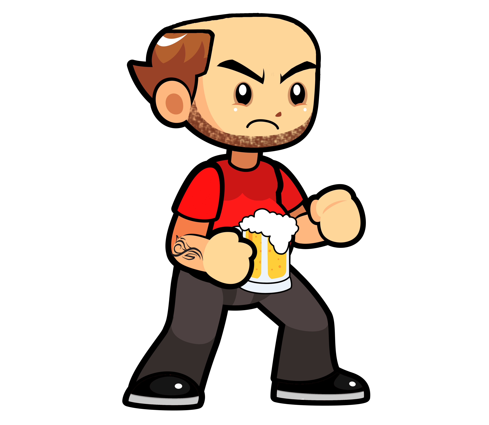

Somos em cinco estudantes, que casualmente se conheceram em um curso de programação de jogos digitais,
ofertado pela ETEC Centro Paula Souza de nossa cidade.
Após o convivio cotidiano fizemos amizade e decidimos trabalhar juntos no trabalho de conclusão de curso,
por acaso nossas habilidades combinavam o que proporcionou a nós um projeto mais completo. Conseguimos criar um site, este aplicativo e logicamente nosso jogo.
A ideia desse trabalho apareceu em uma simples conversa entre a gente: "Como seria programar um jogo bebado? Como seria a sensação de trabalhar alcoolizado?". Na hora, passammos a pensar em como aplicar isso em um jogo e como ele pode e deve ser utilizado, para ajudar as pessoas mesmo que um pouco, buscamos mudar o mundo de alguma forma, conscientizando e entretendo os jogadores
Por conta de algumas dificuldades que podem surgir durante a gameplay, decidimos montar este aplicativo, que irá possuir mais informações sobre o jogo, seu mundo, sobre o personagem e dicas importantes para você entender melhor sobre a mecanica. Preparado? Então desbrave o GuiaCode e aprenda sobre este magnifico jogo.